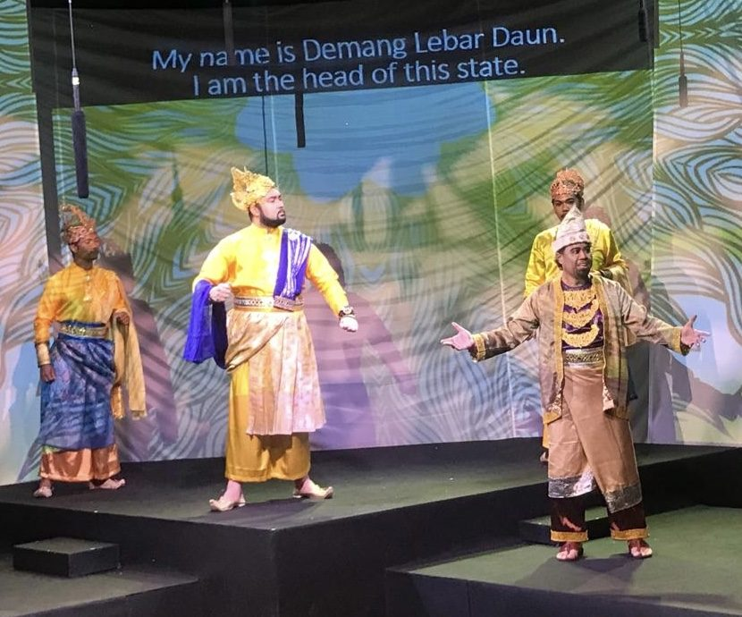
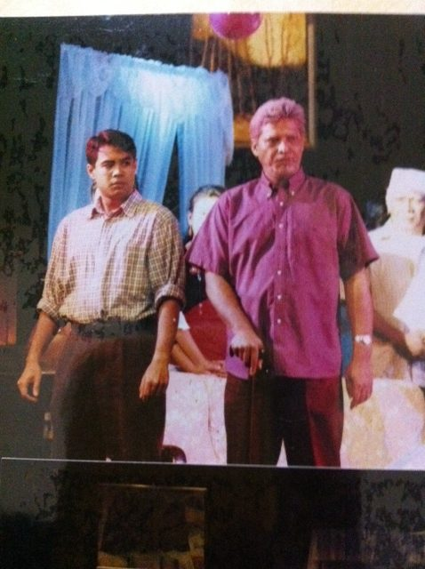
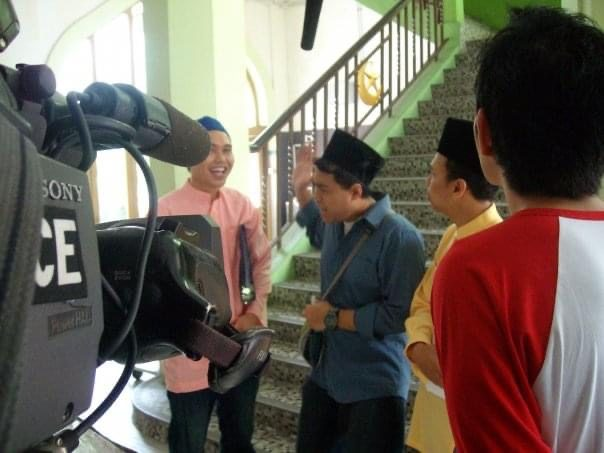

The actor
Stay present. Listen. Read the room. Think quickly. Make choices. Adapt. Keep going. Hazriq has been doing that since 1997, when he took a supporting role in Indera Bangsawan at Victoria Theatre. Stage plays in Singapore, Malaysia and Brunei followed, along with television, film and radio.

| Year | Production | Role | Company |
|---|---|---|---|
| 2025 | Salina | Encik Salim | Teater Kami, Esplanade Pesta Raya |
| 2024 | Bingit, Season 5 | Photographer Lan | Mediacorp Suria |
| 2024 | Project Dian | Main actor | Kaveman Films, short film |
| 2022 | Sang Nila Utama | Demang Lebar Daun | Anggerik Temasek Bangsawan |
| 2022 | Dang Anum | Dato Seri Syahbandar | Anggerik Temasek Bangsawan |
| 2018 | KIN, Episode 96 | Mr Syed | Mediacorp Channel 5 |
| 2014 | Atuk (monologue) | Solo | Mastera Theatre Festival, Brunei |
| 2008 | Kallang Roar the Movie | Hussein Aljunied | Merelion Pictures |
| 2007–08 | 2 x 5 Dol, Seasons 1–2 | Shamsul | Mediacorp Suria |
| 2005 | Villa Singa | Cikgu Hamed | Teater 2000, Victoria Theatre |
| 2003 | Hikayat Hang Tuah | Bendahara Inderapura | Teater Kami |
| 1997 | Indera Bangsawan | Suami and multiple roles | Teater Kami, Victoria Theatre |

